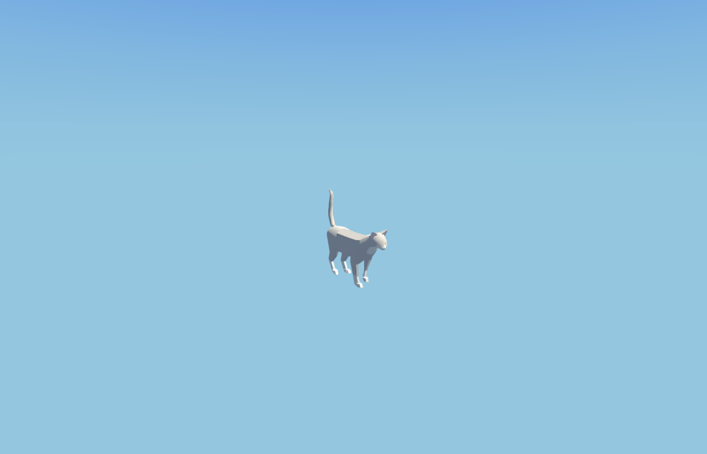
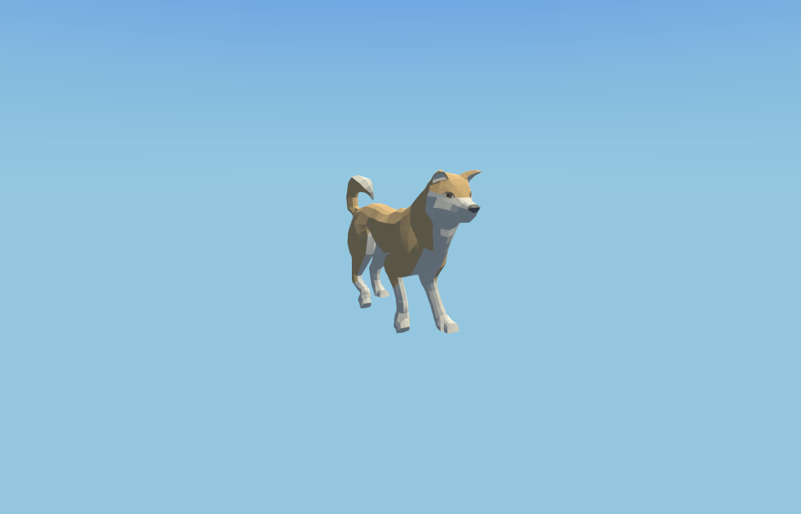
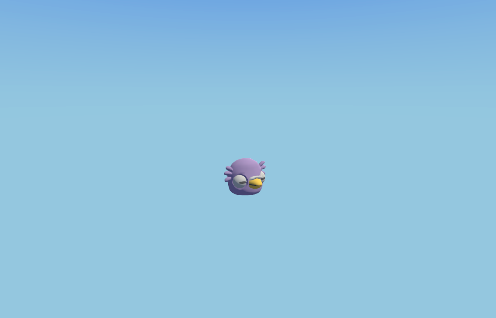
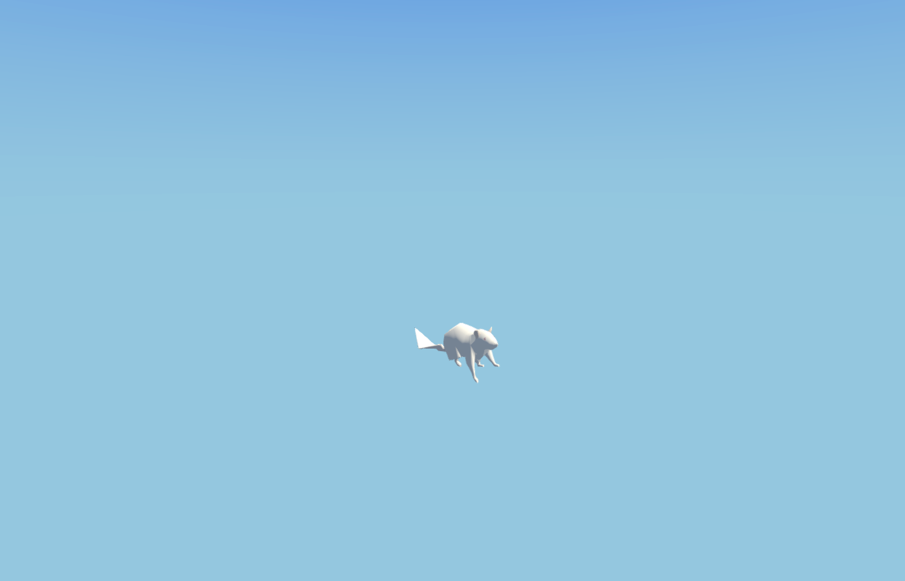
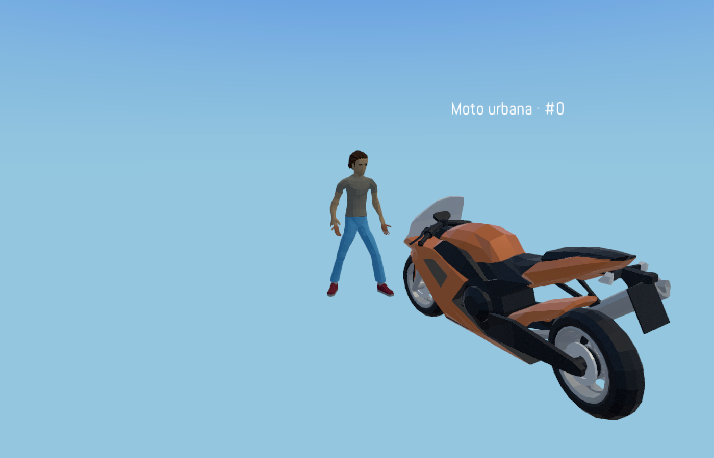
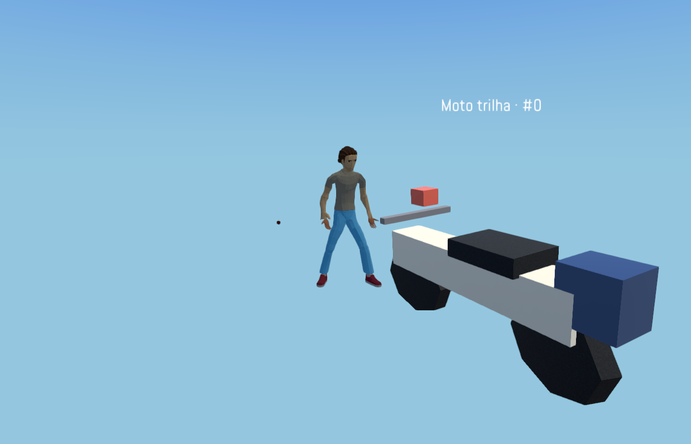
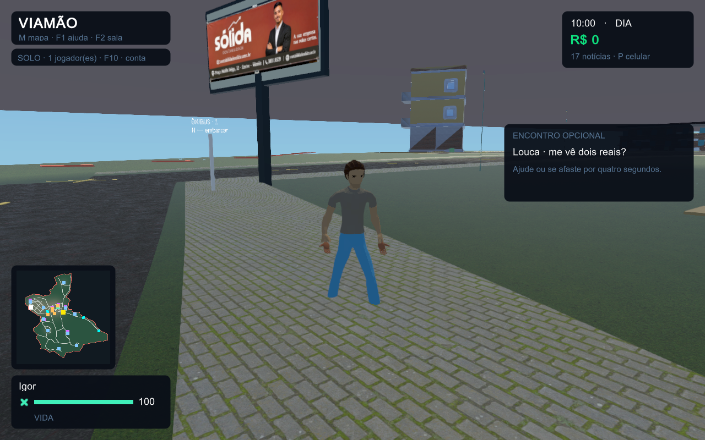
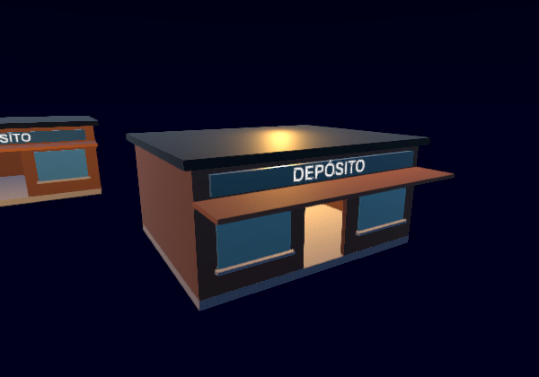
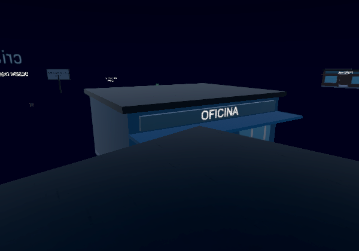
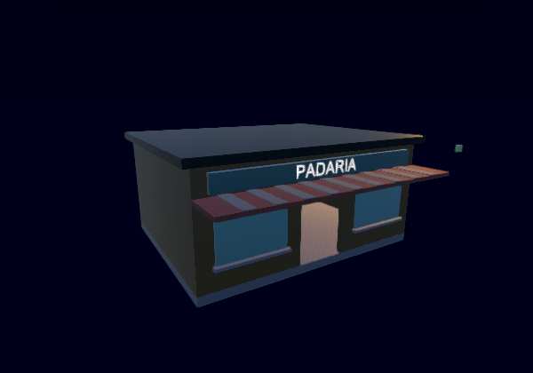

Capturas reais do jogo. Pedestres com colisão física, animais e motos animados, prédios com volumes fechados e ruas revisadas. Testes: 166 prédios, 830 faces verificadas e sete fachadas de missão.









